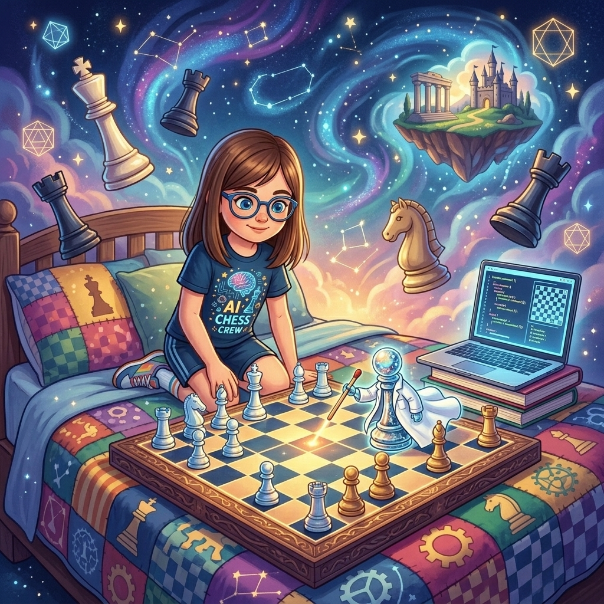
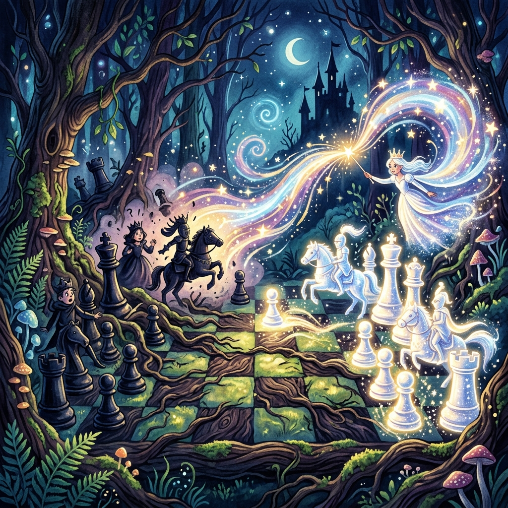

La Jugada Invisible
Donde Martina descubre que la mejor jugada es la que preparaste la noche anterior mientras los demás dormían
♟️ Ver partida del Ataque Yugoslavo ↓▶️ ¿Prefieres escuchar la historia? Clic aquí para ver el Audiolibro Animado
La noche antes del torneo nacional, Martina recibió un mensaje en el grupo de WhatsApp de ajedrez. Era la lista de emparejamientos de la primera ronda. Bajó la mirada hasta su nombre y leyó: «Martina (Elo 1450) vs. Amanda (Elo 1620).»
Ciento sesenta y dos puntos más. Eso era mucho. Era como empezar la partida con un peón menos. Era como jugar contra alguien que ya te ganó antes de sentarse. Pero Martina no se asustó con los números. Los números eran para las calculadoras. Ella era para el tablero.
—Busca sus partidas —dijo su papá, que estaba friendo algo en la cocina que olía sospechosamente a empanada de Apertura Italiana. O quizás era pizza. Últimamente todo olía a empanada en esa casa.
Y Martina buscó. Porque eso era lo que hacían los grandes. Polgar estudiaba a sus rivales obsesivamente. Tal también, aunque luego hiciera lo contrario de lo que había estudiado. Pero primero estudiaba. Luego improvisaba. Luego sacrificaba. Luego ganaba. O perdía. Pero nunca empataba.
Encontró diecisiete partidas de Amanda Pérez en la base de datos. Diecisiete partidas con negras. Diecisiete Defensas Sicilianas. Ni una sola excepción. La niña jugaba c5 contra e4 como quien respira: sin pensarlo. Si alguien le jugaba 1.e4 a Amanda, ella contestaba 1...c5 aunque estuviera dormida. Aunque estuviera en el recreo. Aunque estuviera en su propio cumpleaños y la torta fuera de chocolate.
—Siciliana —dijo Martina, y sonrió—. Perfecto.
—¿Perfecto? —Su papá la miró—. La Siciliana es sólida como una nevera.
—Las neveras también se abren. Solo necesitas saber dónde está la manija.
Esa noche, Martina no se durmió. Se preparó. Extendió su tablero portátil sobre la cama. Abrió la laptop con la base de datos. Y empezó a analizar. Jugada por jugada. Variante por variante.
—Estás haciendo trampa —dijo una voz minúscula desde la casilla e4.
Peoncito apareció sentado en el borde del tablero, con las piernas colgando sobre el abismo de la tercera fila. Llevaba puesta una bata blanca de laboratorio que le quedaba cuatro tallas grandes y arrastraba por el suelo como una capa de científico loco. En la mano, un puntero láser diminuto (que en realidad era un fósforo apagado, pero él insistía en que era láser).
—Es preparación —dijo Martina sin levantar la vista—. No es trampa.
—Sabes qué va a jugar antes de que lo juegue. Eso es como saber dónde va a saltar el Caballo de Ŋ antes de que salte.
—Nadie sabe dónde va a saltar el Caballo de Ŋ. Ni siquiera él. La semana pasada intentó saltar a f6 y apareció en b2. Dijo que era una «variante teórica».
—Exacto. Y tú sabes dónde va a jugar Amanda. Eso es ventaja.
—En el ajedrez de torneo —dijo Martina—, la preparación no es trampa. Es trabajo. Los grandes maestros se pasan horas estudiando rivales. Preparan líneas. Esconden novedades. A veces, una sola jugada nueva que preparaste en tu casa vale más que cien partidas de experiencia.
—Suena a trampa —dijo Peoncito.
—Suena a ajedrez.
—Suena a trampa elegante.
—Peoncito, un día te voy a capturar en diagonal y vas a ver lo que es una trampa de verdad.
Peoncito se ajustó la bata con dignidad ofendida.
—Las capturas en diagonal son mi mayor miedo. Después de los bigotes despegados. Y de las galletas sin azúcar. Y de...
—Cállate y ayúdame a analizar.
—No sé analizar. ¡Soy un peón! Mi trabajo es avanzar y morir. Y tener estilo.

A las once de la noche, un crujido familiar anunció la llegada del Alfil Exiliado. Se deslizó por la diagonal a1-h8 del tablero (solo las negras, obviamente; las blancas seguían siendo territorio prohibido para él) y se detuvo junto a la libreta de Martina.
—La Siciliana Dragón —dijo, leyendo las anotaciones—. Ataque Yugoslavo. 0-0-0, Ae3, f3, g4, h4. Tormenta de peones en el flanco de rey. Agresivo.
—¿Te gusta?
—Es... artísticamente violento. Como un cuadro de Picasso pero con peones volando hacia el enroque enemigo.
—Eso es muy específico.
—Tuve cuatrocientos años de exilio para desarrollar mis metáforas. No fueron años perdidos. Fueron años de práctica.
—¿Y la línea?
El Alfil Exiliado estudió la libreta. Su mitra se movía de izquierda a derecha siguiendo las flechas que Martina había dibujado.
—Es buena. Muy buena. Pero tiene un riesgo.
—¿Cuál?
—Que si Amanda se desvía en la jugada nueve, toda tu preparación se va por la diagonal. Como yo cuando me exiliaron. Pero sin el drama.
—No se va a desviar. Lo he comprobado en diecisiete partidas.
—Diecisiete partidas no son todas las partidas. Son diecisiete. El ajedrez tiene más jugadas que estrellas en el cielo. —Hizo una pausa—. Aunque yo solo conozco la mitad de las estrellas. Las que están en casillas negras.
Martina lo ignoró y siguió analizando.
A las dos de la mañana, Martina seguía despierta. Su papá se asomó por la puerta. Vio el tablero, la laptop, la libreta llena de flechas, el fósforo de Peoncito tirado en el suelo y una extraña sombra con forma de mitra que se deslizó rápidamente detrás de la cortina.
—Martina, mañana juegas. Necesitas dormir.
—Necesito prepararme.
—Dormir es prepararse. El cerebro consolida la memoria mientras duermes. Si no duermes, todo lo que estudiaste se evapora y mañana juegas como si hubieras aprendido ajedrez ayer.
—Aprendí ajedrez hace seis meses. Técnicamente siempre juego como si hubiera aprendido ayer.
Su papá suspiró. El suspiro del padre que sabe que ha perdido la discusión lógica.
—Diez minutos más —negoció Martina.
—Cinco.
—Ocho.
—Seis. Y apago la luz yo.
—Seis y medio.
—No existen los medios minutos en ajedrez.
—En blitz sí.
—Esto no es blitz. Son las dos de la mañana.
—Seis.
—Seis. Trato hecho.
En esos seis minutos, Martina repasó la línea clave. No la aprendió de memoria, como quien recita un poema en el colegio. La entendió. Entendió por qué el peón f3 protegía e4. Por qué el alfil en e3 apuntaba al flanco de rey. Por qué el enroque largo ponía al rey a salvo mientras las piezas del otro flanco se lanzaban al ataque como una estampida de caballos furiosos.
—Si entiendes la idea —murmuró—, no necesitas memorizar las jugadas. Las jugadas salen solas.
—Eso es profundamente cierto —dijo el Alfil Exiliado desde detrás de la cortina—. Y profundamente aterrador si lo dice una niña de nueve años a las dos de la mañana con un peón de laboratorio y una mitra escondida en su cuarto.
—Seis minutos —anunció Peoncito, golpeando el tablero con su puntero-fósforo—. Hora de dormir. Y si no obedeces, te clavo el fósforo en el peón de d4.
—No puedes clavar nada. Eres un peón. No tienes brazos.
—Tengo intención. Que es lo que importa.
El polideportivo del torneo nacional era tres veces más grande que el de su colegio. Cien tableros. Doscientos jugadores. Árbitros con gafas y cronómetros colgados del cuello que caminaban entre las mesas como pingüinos silenciosos. Padres en las gradas con cara de sufrir más que sus hijos. Un niño en la mesa 12 que mordía su caballo de plástico antes de moverlo.
—Ese niño se come las piezas —susurró Peoncito desde el bolsillo de Martina, donde se había metido sin pedir permiso—. Eso es canibalismo ajedrecístico. Deberían descalificarlo.
—No está en mi mesa. No me importa.
—A mí sí. Ese caballo tenía familia.
Martina se sentó en la mesa 47. Al otro lado, Amanda Pérez. Once años. Gafas redondas. Una trenza tan apretada que le estiraba las cejas hacia arriba, dándole un aire perpetuamente sorprendido. Como si el tablero acabara de contarle un chisme.
—Blancas —anunció el árbitro, señalando a Martina con la barbilla.
Martina pulsó el reloj. e4.
Amanda jugó c5. Sin dudar. Sin pestañear. Sin pensar. Siciliana. Como siempre. Como respirar. Como parpadear. Como ser Amanda Pérez.
—Ya está —Peoncito asomó la cabeza del bolsillo—. Hizo lo que esperabas. Es como si tuvieras una bola de cristal.
—No tengo bola de cristal. Tengo base de datos.
—Que es la bola de cristal de los pobres.
Martina jugó Cf3. Amanda d6. Martina d4. Amanda cxd4. Martina Cxd4. Amanda Cf6. Martina Cc3. Amanda g6.
—Dragón —dijo Martina en voz baja—. La variante Dragón.
—¿Es buena o mala noticia? —preguntó Peoncito.
—Es la noticia. La que esperaba. La que preparé anoche mientras tú jugabas a ser científico con un fósforo.
—Era láser.
—Era un fósforo.
—Un fósforo láser. No me quites la ilusión.
Martina jugó Ae3. Amanda Ag7. Martina f3. Amanda 0-0. Martina Dd2. Amanda Cc6.
Hasta aquí, todo libro. Todo conocido. Amanda movía a velocidad de crucero, con la confianza de quien ha bailado este baile cientos de veces. Sus dedos volaban del tablero al reloj como golondrinas amaestradas.
Martina jugó 0-0-0.
Y Amanda se congeló. Su mano, que ya iba hacia el caballo, se detuvo a medio camino. Sus cejas, ya de por sí altas, treparon un centímetro más. El chisme del tablero acababa de volverse interesante.
—Se rompió —susurró Peoncito—. ¡La rompiste! ¡Hiciste que una niña que juega sin pensar... piense! Es como hacer que un peón vuele.
Amanda tardó dos minutos en mover. Dos minutos en un torneo es una eternidad. Es como esperar a que Peoncito avance de la segunda a la séptima fila. Dos minutos en los que Martina vio exactamente lo que esperaba ver: una jugadora que había salido de su zona de confort y no sabía volver.
Finalmente Amanda jugó Ad7. El desarrollo estándar. Exactamente lo que Martina había previsto.
—Como un reloj —dijo Peoncito.
Martina jugó g4. El primer peón de la tormenta. Amanda Tc8. Martina h4. El segundo peón. Amanda Ce5. Y entonces, Martina soltó la jugada invisible:
h5.
El silencio que siguió fue el silencio más hermoso que Martina había oído en un torneo. No era el silencio de la concentración. Era el silencio de la sorpresa. El silencio de «esa jugada no existe en mis apuntes». El silencio de una jugadora que acaba de entrar en un bosque oscuro sin linterna.
Amanda miró el tablero. Miró a Martina. Miró el techo, como si la respuesta estuviera escrita en las vigas. No estaba.
—No conoce esta línea —susurró el Alfil Exiliado, que de algún modo había aparecido reflejado en el vidrio de las gafas de Amanda—. Está perdida en un bosque que tú plantaste anoche, regaste con análisis y decoraste con flechitas de colores.
—El bosque oscuro de Tal —dijo Martina—. Pero con GPS.
—Y con un alfil de guía turístico —agregó el Alfil—. Que conste en acta.

Amanda intentó defenderse como pudo. Capturó el caballo en d4: Cxd4. Martina recapturó con el alfil: Axd4. Amanda jugó Da5, una jugada desesperada que olía a «no sé qué hacer pero tengo que hacer algo».
—Está moviendo por mover —diagnosticó Peoncito, que se había subido al borde del tablero y señalaba con su fósforo—. Mover por mover es lo que hacemos los peones cuando no tenemos plan. Pero nosotros al menos tenemos la excusa de que solo podemos ir hacia adelante.
Martina jugó hxg6. El peón h capturó en g6, abriendo la columna h como quien descorre una cortina. El rey negro, que hasta ese momento había estado cómodamente enrocado, se encontró de repente en pelotas.
Amanda capturó: fxg6. Su estructura de peones frente al rey era ahora un queso gruyere. Agujeros por todas partes. Un queso suizo. Un queso que lloraba.
Martina jugó Ad3. El alfil apuntó directamente a g6. Amanda Ae6. Martina Cg5. El caballo saltó a g5, amenazando dama y mate simultáneamente. Un doble amenaza que era como una navaja suiza: servía para todo.
Amanda movió su dama a b4. Última esperanza. Martina De2, defendiendo el alfil y preparando el asalto final.
—Judith Polgar —dijo Martina— decía que el ataque es una sinfonía. Cada pieza entra en su momento justo. Si una se adelanta, todo se desafina.
—Y Mikhail Tal —agregó Peoncito— decía que si la sinfonía se desafina, igual puedes ganar si el rival se asusta más que tú.
—Eso no lo dijo Tal.
—Lo dijo su caballo. El que siempre saltaba en Ŋ. Ese caballo sabía de miedo escénico.
Amanda jugó d5, abriendo el centro en un intento desesperado de darle aire a su rey. Pero ya no había aire. Ya no había centro. Ya no había nada excepto la derrota acercándose como un tren.
Martina jugó Dh7+. La dama entró con jaque. Rf7. Txh8, capturando la torre. Re8. Dxg6+. Rd8.
Dg8 mate.
La dama blanca en g8. El rey negro en d8. Las piezas negras amontonadas alrededor de su propio monarca como turistas alrededor de un mapa que nadie sabe leer. Jaque mate.
Amanda miró el tablero durante quince segundos. Luego veinte. Luego veinticinco. Su trenza parecía haberse tensado aún más, si eso era físicamente posible, lo cual no lo era pero daba igual.
Tendió la mano.
—No entiendo —dijo—. Esa línea no la había visto nunca. ¿De dónde la sacaste?
Martina le estrechó la mano.
—De una base de datos. De mi tablero. De quedarme despierta hasta las dos de la mañana mientras un peón con bigote me decía que estaba haciendo trampa.
Amanda parpadeó.
—¿Un peón con bigote?
—Es una metáfora.
—Ah.
—En realidad no —dijo Peoncito desde el bolsillo—, pero es más fácil que explicarle que existo.
De vuelta en el hotel, Martina se sentó en la cama. Su papá revisaba los resultados en el teléfono con cara de no entender nada pero sentirse orgulloso igual.
—Ganaste. ¿Cómo se siente?
Martina lo pensó.
—Como si hubiera jugado dos partidas. Una anoche, en mi cuarto, cuando preparé la línea. Y otra hoy, en el tablero, cuando la ejecuté. La de verdad fue la de anoche. La de hoy fue solo... el eco.
Su papá asintió lentamente, como quien acaba de recibir sabiduría que no pidió pero que tampoco va a rechazar.
—Así que estudiaste a tu rival, preparaste una línea secreta, y funcionó. Como una espía del ajedrez.
—No memoricé variantes. Entendí la idea. Por qué cada jugada era necesaria. Eso... —bostezó— es más importante que saberse veinte jugadas de memoria. Porque si Amanda se desviaba, yo igual sabía qué hacer. No porque lo hubiera memorizado. Sino porque había entendido la posición.
—Como un pianista que no lee la partitura. Toca porque entiende la música.
Martina lo miró con respeto.
—Eso estuvo bien, papá.
—Gracias. Lo leí en internet.
—Y lo arruinaste.
Esa noche, antes de dormir, Martina cerró los ojos y vio el tablero en su mente. Las piezas seguían moviéndose. Pero ya no preparaban nada. Solo jugaban. Libres. Como debe ser.
—Mañana segunda ronda —dijo Peoncito desde la almohada, donde se había instalado sin pedir permiso (otra vez)—. ¿Contra quién?
—No sé.
—¿Y no te preparas?
Martina negó con la cabeza, ya medio dormida.
—No. Porque sé jugar ajedrez. La preparación ayuda. Pero el ajedrez se juega en el tablero. No en la libreta. Ni en la laptop. Ni en el fósforo de un peón que se cree científico.
—Era láser —murmuró Peoncito, y se durmió con el bigote perfectamente encerado y una sonrisa de orgullo falso.
Fin del sexto cuento.
Continuará…
🏛️ El Secreto detrás del Cuento
El feroz ataque que Martina preparó es completamente real y se llama el Ataque Yugoslavo contra la Defensa Siciliana Variante Dragón. Grandes campeones del mundo como Bobby Fischer lo perfeccionaron para destruir el enroque enemigo enviando una letal tormenta de peones (g4, h4, h5). ¡Reproduce esta famosa partida donde Bobby Fischer destruyó a su oponente usando esta misma línea de preparación!
¿Te gustó este cuento? Compártelo: